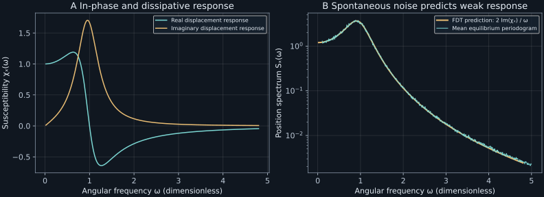

Chapter 17 · Lecture 20
Causality, susceptibility, and fluctuation–dissipation
A trapped particle can be characterized by driving it gently or by recording its spontaneous equilibrium fluctuations. Under precise equilibrium and coupling assumptions, the two measurements determine the same dissipative response. A stronger drive in a nonlinear trap can invalidate the comparison even when its weak response is predicted accurately. The task is to identify the observable, conjugate force, Fourier convention, and perturbation scale before converting a noise spectrum into a susceptibility.
The sequence follows NPTEL lecture 20: driven Langevin mobility, the two fluctuation–dissipation relations, causal response, classical equilibrium correlation, analyticity, and LCR analogy. The canonical phase-space derivation, coordinate-versus-velocity distinction, finite-band dispersion check, and nonlinear control are developed here. Quantum response is identified as a separate extension.
17.1 Linear response is a causal convolution L20 18:04
Consider a stationary reference system with observable $B$ and a prescribed small external field $F(t)$. Write $\delta\langle B_t\rangle$ for the change in its ensemble mean. Linearity to first order, time-translation invariance of the reference state, and causality give
$$\delta\langle B_t\rangle=\int_0^\infty R_{BA}(s)F(t-s)ds+O(F^2).\tag{17.1}$$The retarded response kernel $R_{BA}(s)$ vanishes at negative lag; the label $A$ will identify the observable conjugate to the field. A causal response depends on earlier fields, and stationarity makes the kernel depend only on elapsed time. “Retarded” expresses that causal ordering; it is not an additional synonym for equilibrium. Causality and linearity alone do not establish a fluctuation–dissipation theorem.
Use the book's positive-exponential transform: $\widetilde F(\omega)=\int F(t)e^{i\omega t}dt$. Substituting it into (17.1) and shifting integration time gives $\delta\widetilde{\langle B\rangle}(\omega)=\chi_{BA}(\omega)\widetilde F(\omega)$, with susceptibility
$$\chi_{BA}(\omega)=\int_0^\infty R_{BA}(s)e^{i\omega s}ds.\tag{17.2}$$For a force $F_0\cos\omega t=\operatorname{Re}[F_0e^{-i\omega t}]$, the steady linear response is $F_0[\operatorname{Re}\chi\cos\omega t+\operatorname{Im}\chi\sin\omega t]$. This fixes the phase convention and the sign of the dissipative component. The kernel has units observable divided by field and time; susceptibility has units observable divided by field. Initial transients must decay before this steady sinusoidal formula applies.
17.2 Free velocity response and thermal noise L20 1:21
For mass $m\gt0$ and drag rate $\gamma\gt0$, add a deterministic force to the free Langevin model: $m\,dV_t=(-m\gamma V_t+F(t))dt+\sqrt{2m\gamma k_BT}\,dW_t$. The white random force has zero mean and its amplitude retains the equilibrium thermal relation. Averaging gives $m\dot{\bar v}+m\gamma\bar v=F$. Its impulse-response kernel is $R_{VX}(t)=e^{-\gamma t}/m$ for $t\geq0$, since a unit force impulse changes momentum by one.
Transforming the exponential kernel gives dynamic mobility $\mu(\omega)=1/[m(\gamma-i\omega)]$, a velocity-per-force susceptibility. The equilibrium velocity spectrum from chapter 16 is $S_V(\omega)=2\gamma k_BT/[m(\gamma^2+\omega^2)]$. Therefore
$$S_V(\omega)=2k_BT\operatorname{Re}\mu(\omega).\tag{17.3}$$This connects spontaneous fluctuations with the dissipative response to a force. The real part enters because mean force power is $\langle F V\rangle_{\mathrm{cycle}}=F_0^2\operatorname{Re}\mu/2$. For a passive equilibrium model this is nonnegative. The static mobility is $\mu(0)=1/(m\gamma)$, so $D=k_BT\mu(0)$ recovers the Einstein relation.
The random-force spectrum itself is $S_\zeta=2m\gamma k_BT$. This is often called the second fluctuation–dissipation relation, while (17.3) is called the first. Names vary across treatments; the objects remove ambiguity. One relates bath-force fluctuations to the friction appearing in a reduced equation, and the other relates an observed equilibrium spectrum to a driven response. The algebraic filter identity $S_V=|\mu|^2S_\zeta$ is compatible with both but, without a thermal relation for $S_\zeta$, does not imply either equilibrium statement.
The harmonic model is linear, so its deterministic mean equation responds linearly at every force amplitude within that model. “Small force” becomes essential when linear response approximates a more general nonlinear system or a bath whose properties change with driving. The laboratory includes an explicitly nonlinear trap to test this boundary rather than pretending a large-amplitude harmonic calculation must fail.
17.3 Equilibrium turns response into a correlation L20 28:20
To see where the thermal connection comes from, consider classical canonical phase space with coordinates $q_j,p_j$, Hamiltonian $H_0$, and normalized equilibrium density $\rho_0=Z^{-1}e^{-\beta H_0}$, where $\beta=1/(k_BT)$ and $Z$ is the finite partition integral. Angular brackets now mean integration against this density. Define the Poisson bracket by $\{f,g\}=\sum_j(\partial_{q_j}f\,\partial_{p_j}g-\partial_{p_j}f\,\partial_{q_j}g)$. For an observable with no explicit time dependence, $\dot A=\{A,H_0\}$ under the reference dynamics.
Let the field perturb energy through $H(t)=H_0-F(t)A$. This defines conjugacy: $F A$ has energy units. A mechanical force couples to position, so $A=X$ for that example. Let $B$ be the measured observable, which can differ from $A$. Assume smooth Hamiltonian flow, preserved phase-space measure, boundary decay permitting integration by parts, and integrability of the correlations below. A reduced Langevin model can inherit this equilibrium response relation; it is not a proof that its finite-dimensional stochastic dynamics are isolated Hamiltonian dynamics.
The density obeys Liouville evolution $\partial_t\rho=\{H,\rho\}$. Write $\rho=\rho_0+\delta\rho$ and retain terms linear in $F$. With $L_0f=\{H_0,f\}$, this gives $\partial_t\delta\rho=L_0\delta\rho-F\{A,\rho_0\}$. Differentiating the Gibbs density gives $\{A,\rho_0\}=-\beta\rho_0\{A,H_0\}=-\beta\rho_0\dot A$. Thus the perturbation source is $\beta F\rho_0\dot A$.
Propagate that source from the earlier time to the observation time with the unperturbed flow. Integrating $B$ against the propagated source is, by measure preservation, equivalent to propagating $B$ forward against the initial source. The result is $\delta\langle B_t\rangle=\beta\int_{-\infty}^t F(s)\langle\dot A(0)B(t-s)\rangle_0ds$, with suitable switch-on or convergence. Comparing with (17.1) proves (17.4). Constants in $B$ do not contribute because $\langle\dot A\rangle_0=0$. ∎
The equilibrium density and energy coupling create the correlation formula. General causal filters do not supply those ingredients. Kubo's original analysis, printed pages 572–573, Section 2 and Theorem 1, constructs response to a perturbation $-AF$ with a classical Poisson-bracket expression and a separate quantum commutator expression. The derivation here explicitly performs the canonical Gibbs-density step in classical phase-space notation.
In a normalizable confining equilibrium, choosing $A=X$ and $B=V$ gives $\dot A=V$ and the mobility form $\mu(\omega)=\beta\int_0^\infty\langle V_0V_t\rangle_0e^{i\omega t}dt$. A free position on the whole line has no normalized spatial Gibbs factor, so the finite-$Z$ phase-space proof above does not literally apply to that full free state. For the free Langevin velocity, Section 17.2 instead verifies the response and thermal covariance directly: $R_{VX}(t)=e^{-\gamma t}/m=\beta C_V(t)$. Transforming this identity reproduces $1/[m(\gamma-i\omega)]$. It is consistent with the Kubo form without assuming a nonexistent free-position equilibrium.
17.4 Coordinate response uses the imaginary susceptibility
Let the measured coordinate itself be $B=A=X$, with centered stationary covariance $C_X(t)$ and perturbing energy $-F(t)X$. Assume its covariance and derivative decay sufficiently for the following transforms and integrations by parts. Stationarity gives $\langle\dot X_0X_t\rangle_0=-C'_X(t)$: differentiating a common shift of the two observation times gives zero. Equation (17.4) therefore becomes $R_{XX}(t)=-\beta C'_X(t)$ for positive lag.
Integrate $\chi_X=-\beta\int_0^\infty C'_X(t)e^{i\omega t}dt$ by parts. The decaying upper boundary and initial covariance give $\chi_X=\beta C_X(0)+i\beta\omega\int_0^\infty C_X(t)e^{i\omega t}dt$. Its imaginary part is $\beta\omega\int_0^\infty C_X(t)\cos\omega t\,dt=\beta\omega S_X(\omega)/2$, using scalar evenness. Rearranging proves (17.5). ∎
At zero drive frequency, the same boundary calculation gives static susceptibility $\chi_X(0)=\beta\operatorname{Var}(X)$ when the coordinate relaxes. Positive-frequency dissipation is $\omega F_0^2\operatorname{Im}\chi_X/2$: multiply the sinusoidal force by the derivative of its displacement response and average over a cycle. Its positivity matches the nonnegative spectrum in (17.5). The factor $\omega$ distinguishes this displacement response from the velocity mobility formula (17.3).
For a harmonically trapped particle, the mean equation is $m\ddot{\bar x}+m\gamma\dot{\bar x}+m\omega_0^2\bar x=F$. It gives $$\chi_X(\omega)=\frac1{m(\omega_0^2-\omega^2-i\gamma\omega)},\quad S_X(\omega)=\frac{2\gamma k_BT/m}{(\omega_0^2-\omega^2)^2+\gamma^2\omega^2}.\tag{17.6}$$
Direct force-noise filtering gives the same spectrum, and its integral returns $k_BT/(m\omega_0^2)$. At zero frequency the susceptibility is $1/(m\omega_0^2)$, also equal to $\beta$ times that equilibrium variance. Three routes—static equilibrium, force response, and spontaneous spectrum—check the same spring stiffness.
Free position on an infinite line is not stationary, so the coordinate spectrum and finite static coordinate susceptibility required in (17.5) do not exist in this form. The free-particle velocity mobility relation remains well defined. Choosing the correct measured observable and conjugate force prevents an apparent divergence from being mistaken for a failed theorem.
17.5 Causality selects an analytic half-plane L20 48:38
For a real causal kernel $R\in L^1([0,\infty))$, extend frequency to $z=x+iy$ with $y\gt0$. The transform $\chi(z)=\int_0^\infty R(t)e^{izt}dt$ converges absolutely because $|e^{izt}|=e^{-yt}$. On compact subsets of the upper half-plane, each differentiated integrand $t^nR(t)e^{-yt}$ is dominated by an integrable multiple of $|R(t)|$. Differentiation under the integral therefore proves analyticity there. On real frequencies, a real kernel gives $\chi(-\omega)=\chi(\omega)^*$; in the upper half-plane the reflection identity is $\chi(-z^*)=\chi(z)^*$.
For an unsubtracted dispersion relation, assume additionally that $\chi$ is continuous on the real axis, locally differentiable at the frequency in question, and $\chi(z)=O(1/|z|)$ uniformly on large upper semicircles. The Cauchy contour then has no contribution at infinity. Taking its boundary limit gives $\chi(\omega)=(i\pi)^{-1}\operatorname{PV}\int\chi(s)/(s-\omega)ds$; the small contour around the boundary point supplies the half-residue. Splitting real and imaginary parts yields $\operatorname{Re}\chi(\omega)=\pi^{-1}\operatorname{PV}\int_{-\infty}^\infty\operatorname{Im}\chi(s)/(s-\omega)ds$. Here PV is the Cauchy principal value, taking symmetric exclusions around the denominator zero. For a real kernel, oddness of the imaginary part gives the equivalent positive-frequency form
$$\operatorname{Re}\chi(\omega)=\frac2\pi\operatorname{PV}\int_0^\infty\frac{s\operatorname{Im}\chi(s)}{s^2-\omega^2}ds.\tag{17.7}$$These are unsubtracted Kramers–Kronig relations under the stated large-frequency decay. Instantaneous or nondecaying response components can require subtractions or distributional terms. Analyticity alone does not specify how a numerical finite-band integral should handle missing tails. The laboratory varies that band explicitly.
For the oscillator, poles solve $\omega_0^2-z^2-i\gamma z=0$, giving $z_\pm=-i\gamma/2\pm\sqrt{\omega_0^2-\gamma^2/4}$. Positive damping keeps both poles in the lower half-plane. At critical damping they coincide; at stronger damping they separate along the negative imaginary axis. They are the frequency-plane form of the time-domain roots of chapter 11.
A causal susceptibility need not have a finite lower-half-plane singularity. For example, the integrable kernel $R(t)=1$ on $0\leq t\leq\tau_*$ and zero elsewhere has $\chi(z)=(e^{iz\tau_*}-1)/(iz)$, with a removable value $\tau_*$ at zero. It is entire and grows in parts of the lower half-plane. Liouville's theorem would require boundedness throughout the entire complex plane, a hypothesis not supplied by causality. The oscillator's poles reflect its specific dynamics, not a universal requirement for every response.
17.6 A series LCR circuit separates charge response from admittance L20 55:38
Let $q_e(t)$ be circuit charge, $I=\dot q_e$ current, $L_e\gt0$ inductance, $R_e\gt0$ series resistance, and $C_e\gt0$ capacitance. An applied voltage $e(t)$ drives $L_e\ddot q_e+R_e\dot q_e+q_e/C_e=e$. The circuit parameters corresponding to mechanical $m$, $m\gamma$, and $m\omega_0^2$ are respectively $L_e$, $R_e$, and $1/C_e$.
The charge-per-voltage susceptibility is $\chi_q(\omega)=1/[C_e^{-1}-L_e\omega^2-iR_e\omega]$. The electrical admittance is current divided by voltage, so $Y(\omega)=-i\omega\chi_q(\omega)$, with a numerator that must not be omitted. The two functions share the damped poles but have different units and zero-frequency limits: charge can acquire a static value while a series capacitor blocks steady current.
Thermal voltage noise with spectrum $2k_BTR_e$ gives current spectrum $S_I=2k_BT\operatorname{Re}Y$ in the classical equilibrium model. The conjugate energy is $-e q_e$, and measuring current differentiates the charge response, just as velocity mobility differs from displacement susceptibility. This circuit check ties the response formula to an actual measured quantity rather than a name assigned to a denominator.
17.7 Laboratory: predict response without driving the sample
The executable ch17_response.py uses $m=\omega_0=k_BT=1$ and $\gamma=0.6$. It compares independent routes to the oscillator susceptibility: an analytic force response, a fitted numerical driven solution, and an ensemble spectrum of an undriven equilibrium stochastic system. It also tests a truncated dispersion integral. NumPy and SciPy are required; run python code/ch17_response.py from the course folder. Results are written beside the script as JSON and plain text; the seed and parameters are recorded. There is no network dependency.
The stochastic part samples the exact two-dimensional position–velocity transition, not Euler steps: with $A=\left(\begin{smallmatrix}0&1\\-1&-0.6\end{smallmatrix}\right)$ and equilibrium covariance $I$, its update matrix is $E=e^{Ah}$ and its independent innovation covariance is $I-EE^T$. An equilibrium Gaussian initial state avoids a warm-up ambiguity. The program advances 512 independent records with $h=0.02$ and 32768 samples per record, computes their position periodograms, and averages the spectra. The comparison band is $0.1\lt\omega\lt5$. Exact transitions remove integration bias but do not remove finite record, sampling, or periodogram fluctuations.

The spectral integral independently gives position variance one, matching the canonical equilibrium covariance. Across the comparison band, the mean estimated spectrum has relative RMS discrepancy $0.05275627$ from the continuous-time FDT prediction. This is a seeded numerical check, not a proof or an error bar for every frequency. The program's exact algebraic identity and spectral quadrature check the analytic formula separately from the random estimator.
python code/ch17_response.py
python figures/ch17_response.py
# Results: code/ch17-results.json and code/ch17-output.txt
# Figure: assets/ch17-response.svgAt drive frequency one, the deterministic mean equation is integrated to time 400, and only times after 200 enter a least-squares fit to cosine, sine, and a constant. With zero cubic stiffness, force amplitudes $0.05$ and $1$ both give response magnitude per force $1.6666667$, agreeing with $|\chi_X(1)|=1/0.6$. A second, explicitly deterministic control adds restoring force $\kappa x^3$ with $\kappa=0.5$. Its fitted fundamental response per force is $1.66664966$ for amplitude $0.05$, but $1.21065199$ for amplitude one. The higher harmonics and changed fundamental are permitted by the nonlinear equation.
This control studies the deterministic small-amplitude limit about the stable origin. It is not a simulation of a thermally fluctuating Duffing oscillator: thermal excursions in that nonlinear potential would alter both its equilibrium covariance and its weak response. Applying the harmonic FDT curve to that different thermal model would be unjustified. Here the nonlinear control has the narrower purpose of showing why amplitude independence can be exact for a linear model and fail once nonlinear forces matter.
For the dispersion check, the principal-value integral is evaluated at $\omega=0.7$, using finite upper cutoffs 3, 10, and 50. Its absolute error in the recovered real susceptibility falls from $0.005459119$ to $0.00012896617$ to $0.0000010191125$. SciPy's Cauchy-weight quadrature handles the interior singularity; simply omitting one frequency bin would mix discretization error with the tail error being measured. The result shows that a causal model obeying the full relation can still fail a finite-band implementation through omitted high frequencies.
17.8 What each assumption buys
Causality supports the retarded kernel and its analytic half-plane; equilibrium supports the canonical correlation formula; conjugate coupling identifies the correlation to use; and weak driving supports the truncation to first order. These are distinct assumptions. A stationary active process can have a spectrum and causal response while violating the equilibrium FDT. A harmonic thermal system can satisfy the same linear response at arbitrary deterministic drive amplitude because the modeled equation is exactly linear. Neither observation contradicts the restricted theorem.
The thermodynamic limit, slowly relaxing modes, conserved quantities, and unbounded coordinates can obstruct the decay conditions used in static limits and integration by parts. State the limiting procedure before interchanging infinite observation time, zero frequency, and system size. In particular, a free position diffuses rather than relaxing to a stationary coordinate distribution, whereas its velocity can have an integrable equilibrium covariance.
The derivation here is classical. Quantum mechanics replaces the classical phase-space response construction by operator response, with attention to operator order and the choice of fluctuation spectrum. One cannot obtain that result by inserting a quantum temperature factor into an unspecified classical correlation. Kubo's paper treats the classical and quantum formulations explicitly; the present chapter uses only the classical specialization stated above.
17.9 Six worked exercises
Exercise 17.1 — Which experiment tests equilibrium?
A stationary sample has a measured noise spectrum and a reproducible causal response to a weak periodic force. Does this establish an equilibrium fluctuation–dissipation theorem? Describe a falsifiable comparison and its required conventions.
Worked solution
Stationarity makes correlation depend on time difference, and weak probing supplies a linear response; neither determines the population weights of microscopic states. Equilibrium is additional information. First identify a coordinate $X$ coupled through energy $-FX$, a temperature $T$, and the positive-exponential Fourier convention used here. Independently measure $S_X(\omega)$ and the response quadratures, extracting $\operatorname{Im}\chi_X$ from the sine component under a cosine force. The classical prediction is $\omega S_X/(2\operatorname{Im}\chi_X)=k_BT$ at frequencies where the denominator is nonzero, with controlled estimator and drive errors.
Failure of that comparison rejects at least one stated assumption or calibration. Agreement over a finite band supports the relation over that band but does not prove a canonical microscopic distribution. If the measured observable is velocity rather than displacement, compare $S_V$ to $2k_BT\operatorname{Re}\mu$ instead; using the wrong quadrature would manufacture a failure even for an equilibrium oscillator.
Exercise 17.2 — Can a causal response be entire?
For $R(t)=1$ on $[0,\tau_*]$ and zero elsewhere, find $\chi(z)$, its value at zero, and its behavior at $z=-iy$ as $y\to\infty$. Explain why Liouville's theorem cannot force a finite pole.
Worked solution
Direct integration gives $\chi(z)=(e^{iz\tau_*}-1)/(iz)$ for $z\ne0$. The power series of the exponential makes the zero singularity removable, with value $\tau_*$. Indeed, termwise integration on the finite time interval gives an everywhere-convergent power series, so the function is entire. For $z=-iy$, $y\gt0$, it equals $(e^{y\tau_*}-1)/y$, which grows exponentially.
Liouville's theorem applies to an entire function bounded throughout the complex plane. Causality bounds the transform in the upper half-plane for this integrable kernel; it does not bound the lower half-plane. The missing global boundedness prevents the proposed conclusion. Relaxation poles are powerful features of particular differential equations, but a finite-duration causal kernel provides a direct counterexample to their asserted necessity.
Exercise 17.3 — Recover mobility from unforced motion
Use $C_V(t)=(k_BT/m)e^{-\gamma |t|}$ and classical response to derive the complex mobility, its dissipative power, and the zero-frequency Einstein relation.
Worked solution
A force couples to position, so the formal conjugate pair is $A=X$, $B=V$, with $\dot A=V$. For the unconfined free Langevin model, use the velocity response directly established in Section 17.2 rather than assuming its whole phase space has a finite canonical partition integral. That calculation gives $R_{VX}(t)=e^{-\gamma t}/m=\beta C_V(t)$ for positive lag. Consequently $\mu(\omega)=m^{-1}\int_0^\infty e^{-(\gamma-i\omega)t}dt=1/[m(\gamma-i\omega)]$. Its real part is $\gamma/[m(\gamma^2+\omega^2)]$, which is positive.
A cosine force gives velocity $F_0[\operatorname{Re}\mu\cos\omega t+\operatorname{Im}\mu\sin\omega t]$. The mean product with force is $F_0^2\operatorname{Re}\mu/2$, since the mixed sine–cosine average vanishes. The same covariance yields $D=\int_0^\infty C_V(t)dt=k_BT/(m\gamma)$, while $\mu(0)=1/(m\gamma)$; therefore $D=k_BT\mu(0)$. The factor of two in the two-sided spectrum follows from integrating both positive and negative lags, not from a different diffusion coefficient.
Exercise 17.4 — Charge susceptibility is not current admittance
Derive the series LCR current response and verify its equilibrium current-noise relation. What are its low-frequency limits?
Worked solution
With time convention $e^{-i\omega t}$, charge derivatives become $-i\omega q_e$ and $-\omega^2q_e$. The circuit equation gives $\chi_q=1/(a-iR_e\omega)$, where $a=C_e^{-1}-L_e\omega^2$. Current is $-i\omega q_e$, so $Y=-i\omega/(a-iR_e\omega)$. Multiplying numerator and denominator by $a+iR_e\omega$ gives $\operatorname{Re}Y=R_e\omega^2/(a^2+R_e^2\omega^2)\geq0$.
The resistor's two-sided voltage spectrum is $2k_BTR_e$. Filtering it to current multiplies by $|Y|^2=\omega^2/(a^2+R_e^2\omega^2)$, hence $S_I=2k_BT\operatorname{Re}Y$. As $\omega\to0$, $\chi_q\to C_e$ but $Y\sim-i\omega C_e\to0$ and $\operatorname{Re}Y\sim R_eC_e^2\omega^2$. A static voltage charges the capacitor while producing no sustained series current. Omitting the numerator would predict the wrong units, dissipation, and DC behavior.
Exercise 17.5 — Design a dispersion reconstruction
For the laboratory oscillator, estimate the real susceptibility at $\omega=0.7$ from its imaginary part. Explain how the cutoff sequence distinguishes missing-tail error from a failed causal relation.
Worked solution
At the probe frequency, $a=1-0.7^2=0.51$ and $b=0.6(0.7)=0.42$, so $\operatorname{Re}\chi=a/(a^2+b^2)=0.51/0.4365\approx1.16838488$. To reconstruct it, evaluate $(2/\pi)\operatorname{PV}\int_0^M s\operatorname{Im}\chi(s)/(s^2-0.7^2)ds$. Factor the denominator as $(s-0.7)(s+0.7)$ and supply the smooth factor $s\operatorname{Im}\chi(s)/(s+0.7)$ to Cauchy-weight quadrature.
The program records absolute errors $0.005459119$, $0.00012896617$, and $0.0000010191125$ for $M=3,10,50$. At high frequency $\operatorname{Im}\chi(s)\sim0.6/s^3$, so the integrand behaves as $0.6/s^4$ and the omitted tail decays as $M^{-3}$. The last two errors have approximately the predicted ratio $(50/10)^3=125$. This quantitative tail behavior supports a finite-band explanation. A single discrepant truncated integral would not justify rejecting causality; one must also control the pole treatment, calibration, Fourier sign, and missing bands.
Exercise 17.6 — Test the range of a linear model
At frequency one, compare the four fitted responses in the laboratory. Quantify the change produced by the cubic force at the stronger drive, and explain what can and cannot be concluded about thermal response.
Worked solution
For the harmonic equation, $\chi(1)=i/0.6$, giving magnitude $1.66666667$. Both force amplitudes reproduce this value after dividing the fitted fundamental amplitude by force amplitude. The cubic control with $\kappa=0.5$ gives $1.66664966$ at force $0.05$, a relative difference of about $1.02\times10^{-5}$ from the harmonic value. At force one it gives $1.21065199$, a reduction of about $27.36\%$. The dimensionless importance of the extra restoring force at displacement scale $x_*$ is $\kappa x_*^2$ relative to the unit linear stiffness, so its effect grows with amplitude.
The fit extracts the fundamental component, not the full waveform; nonlinear harmonics are allowed. The results demonstrate an amplitude-dependent deterministic response and the need to check a weak-drive range when approximating nonlinear dynamics. They do not calculate the equilibrium FDT of a thermally populated nonlinear trap. That experiment would require its own thermal stochastic dynamics, equilibrium initialization, unforced correlation, and weak perturbation measurement. The harmonic spectrum cannot supply those missing data.
17.10 Sources and provenance
NPTEL lecture 20 supplies the chapter sequence. Its caption text was read sequentially; three timed lecture frames were inspected as bounded visual checks. Audio was not independently reviewed. The source map distinguishes those modalities and records the corrected circuit observable and analytic-function qualification.
R. Kubo, Statistical-Mechanical Theory of Irreversible Processes. I. General Theory and Simple Applications to Magnetic and Conduction Problems, Journal of the Physical Society of Japan 12, 570–586 (1957), doi:10.1143/JPSJ.12.570; primary-paper scan. Section 2, Theorem 1, printed pages 572–573, was inspected for the equilibrium response construction and its classical/quantum distinction. The canonical derivation, oscillator checks, and finite-band numerical experiment above are developed explicitly in the chapter.
The spectral normalization and Nyquist relation continue chapter 16; the exact oscillator covariance and roots continue chapter 11. Source coverage records sampled visuals rather than a full audiovisual audit.